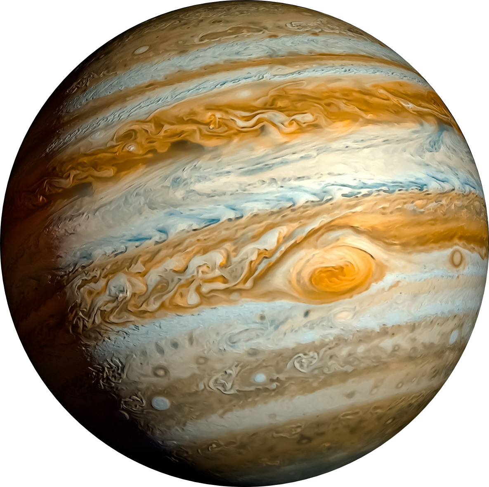
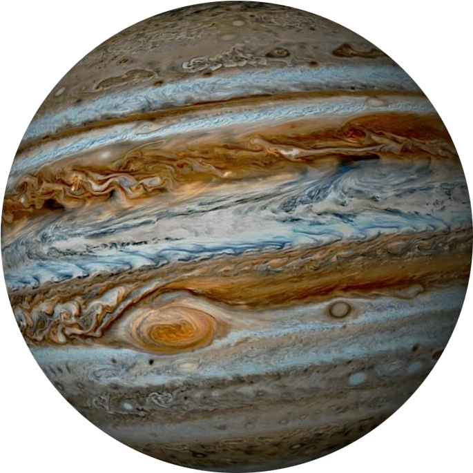

|
Интересные объекты в атмосфере Ядро Юпитер в Солнечной системе Интересные факты о планете |
ЮПИТЕР
 Юпитер — пятая планета от Солнца и самая большая планета Солнечной системы, газовый гигант, масса которого более чем в два с половиной раза превышает массу всех других планет вместе взятых, при этом она составляет чуть менее одной тысячной массы Солнца. Атмосфера
На фотографиях атмосферы Юпитера отчетливо видны полосы облаков, параллельные экватору. Из-за огромной скорости вращения вокруг своей оси и вертикальных потоков в атмосфере планеты облака полос находятся в постоянном движении. У экватора облака движутся со скоростью около 130 м/с, по мере приближения к полюсам скорость их движения падает до полной остановки. Светлые полосы называются зоны. Содержание аммиачного льда позволяет облакам подниматься выше, поэтому зоны выглядят светлее. Их температура ниже, чем на поясах. Градиент ветра — антициклон. Зоны — это области с восходящими потоками. Темные полосы — пояса. Облака значительно тоньше и находятся ближе к планете. Пояса теплее зон. Градиент ветра — циклон. Потоки поясов движутся вниз. |